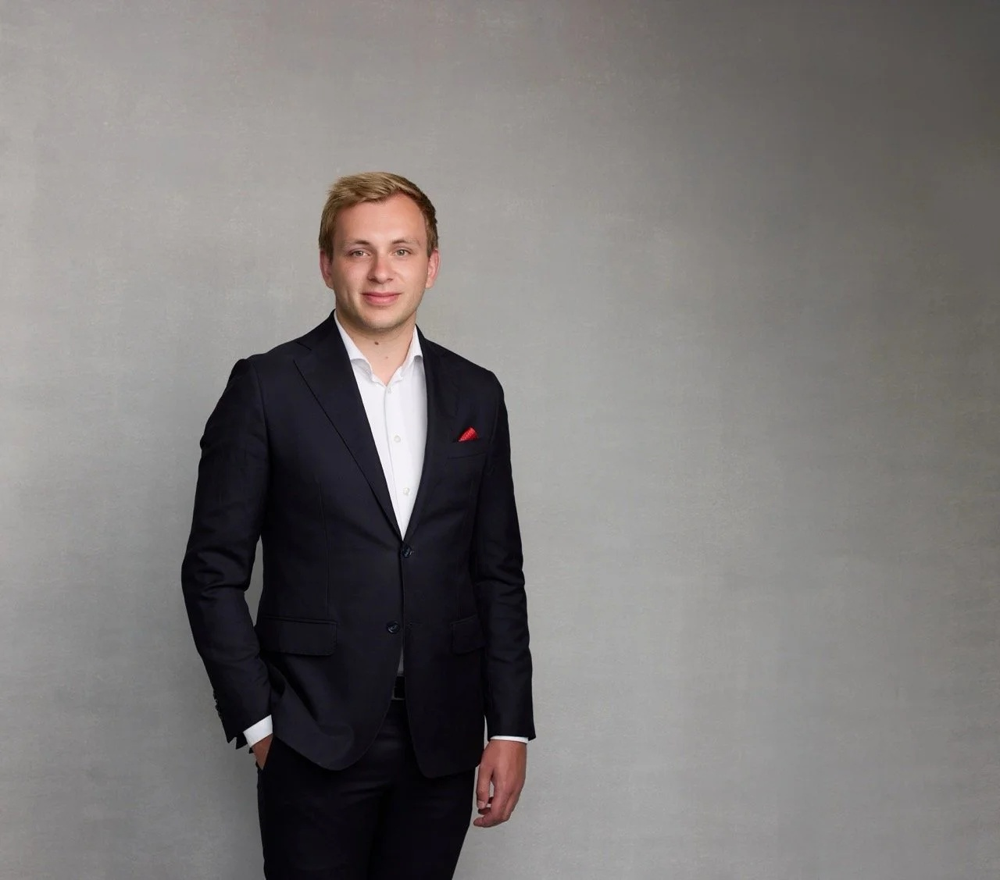
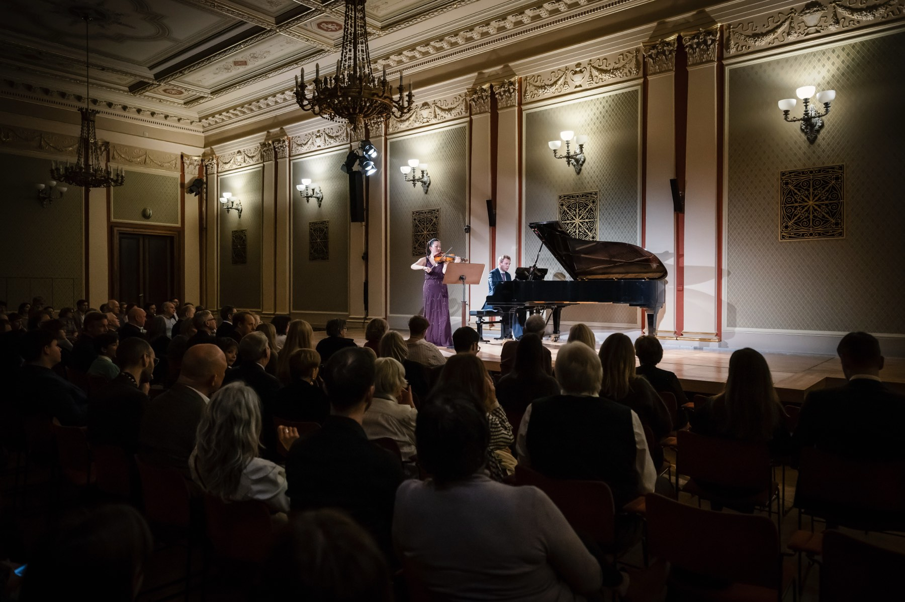

Sinds 2022
Samen brengen zij een frisse, dynamische kijk op de klassieke muziek, en verbinden zij zich diepgaand met publiek in heel Europa.
In 2022 richtten violiste Karen Su en pianist Ruben Plazier Experience Klassiek op: een concertreeks die de klassieke muziekervaring herdefinieert door doordachte verhalen en echt contact met het publiek, en later ook een Academy, waarin zij doorgeven wat zij zelf van hun eigen leermeesters meekregen.

Ruben Plazier (Delft, 1998) is een klassiek pianist, gevormd in de traditie van de Russische pianoschool. Op zijn veertiende begon hij aan het Rotterdams Conservatorium bij Stéphane De May, die hem in contact bracht met de Franse pianist Jean-Bernard Pommier, een ontmoeting die zijn spel voorgoed zou veranderen. Na jaren pendelen tussen Rotterdam, Béziers en Parijs behaalde hij met unanimiteit van de jury zijn Diplôme Supérieur de Concertiste aan de École Normale de Musique Alfred Cortot.
Als solist speelde hij concerto's met orkest en trad hij op in zalen als het Concertgebouw Amsterdam en De Doelen Rotterdam, evenals in New York en Los Angeles. Naast het podium stelt hij de klassieke programmering samen van De Doelen (seizoen 2026/27) en het Muziekgebouw Eindhoven.
Bezoek rubenplazier.com →
Karen Su, een gevierde violiste afkomstig uit Los Angeles, weet publiek wereldwijd te boeien met haar uitzonderlijke artisticiteit en expressieve spel. Geboren in een muzikale familie, begon haar muzikale reis onder begeleiding van haar vader en bloeide zij later verder onder Igor en Vesna Gruppman aan het Rotterdams Conservatorium, waar zij op haar vijftiende aan haar opleiding begon en summa cum laude afstudeerde. Haar artistieke ontwikkeling bereikte nieuwe hoogten als artist-in-residence bij de Queen Elisabeth Music Chapel, onder mentorschap van de legendarische Augustin Dumay.
Geprezen om haar "confidence and drive… warmth and intensity" (The Strad), won Karen Su prestigieuze prijzen: laureaat van de Queen Elisabeth Competition, speciale prijswinnaar bij de Wieniawski International Violin Competition, en topprijswinnaar bij zowel de Lipizer als de Princess Astrid International Competitions. Ze trad op met orkesten als het Orchestre Philharmonique Royal de Liège, het Belgian National Orchestra en het Trondheim Symphony Orchestra & Opera, in zalen als het Concertgebouw Amsterdam, Palais des Beaux-Arts Brussel en de Rudolfinum in Praag.
Als kamermusicus werkte zij samen met artiesten als Augustin Dumay, Gary Hoffman, Jian Wang, Lorenzo Gatto, Miguel da Silva en Jean-Claude Vanden Eynden. Samen met Ruben Plazier vormt zij een viool-pianoduo, waarmee zij de concertreeks Experience Klassiek organiseert. Karen Su bespeelt momenteel een 1747 Nicolo Gagliano-viool, gulle bruikleen van een anonieme donor.
Samen brengen zij een frisse, dynamische kijk op de klassieke muziek, en verbinden zij zich diepgaand met publiek in heel Europa.